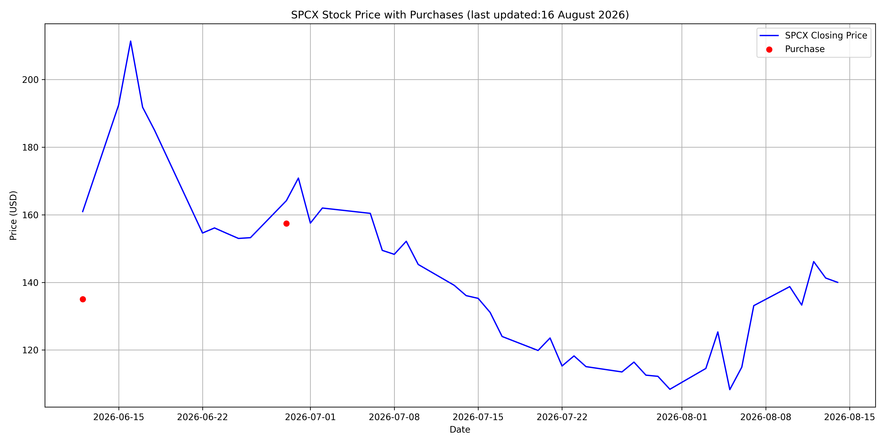

SPCX Purchase History
If you are wondering why the dots aren't on the line, it's because the script that creates this chart only gathers closing prices. The first shares I bought, for example, were from the IPO, at $135.00, and the first day of trading closed much higher, hench the dot is much lower than where the line begins.
